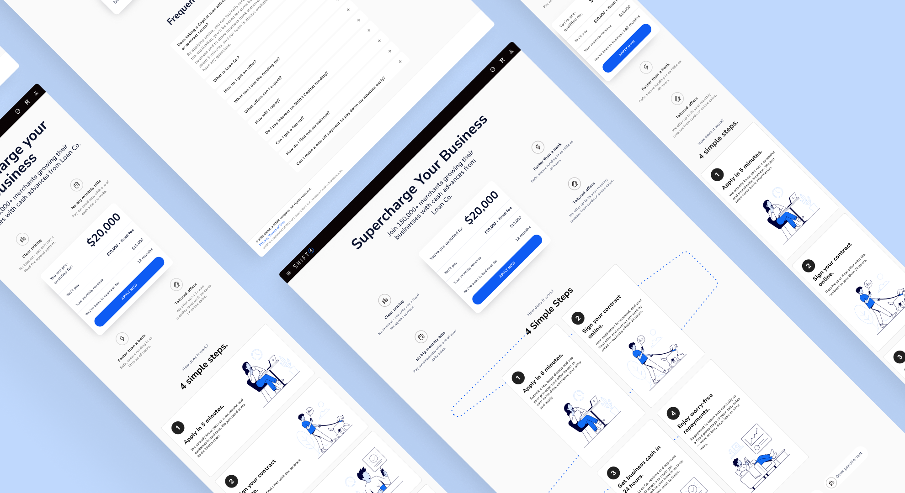
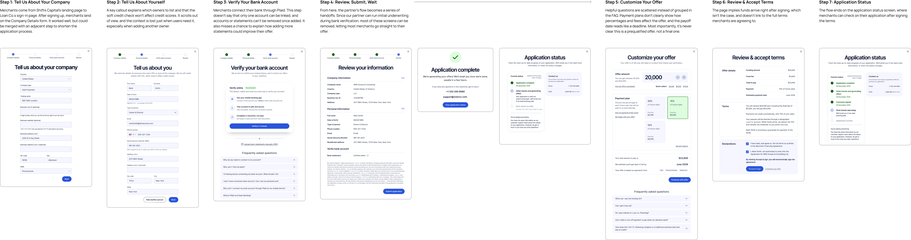
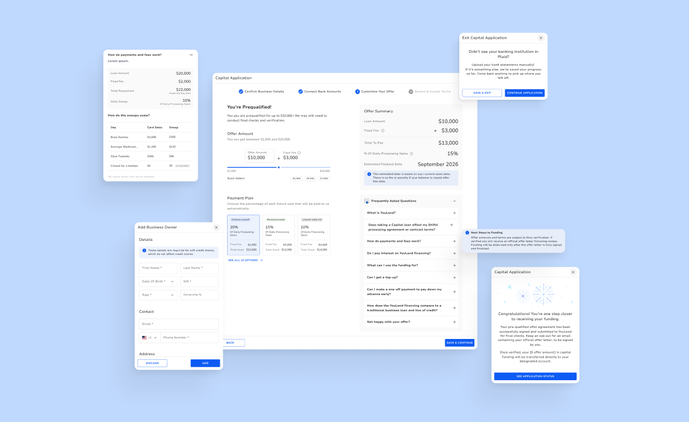
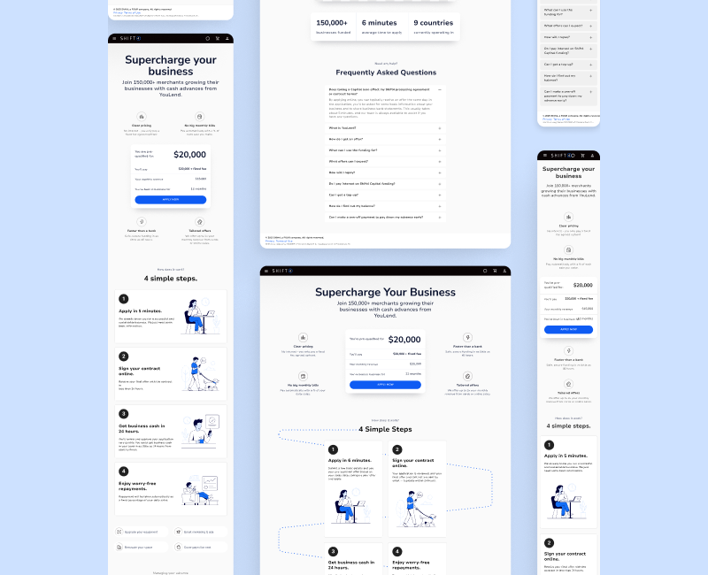
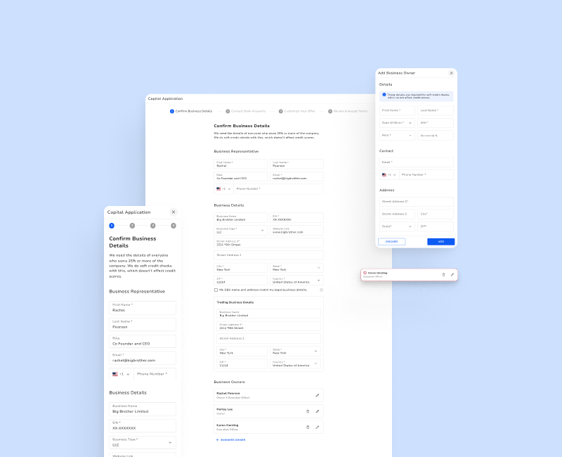
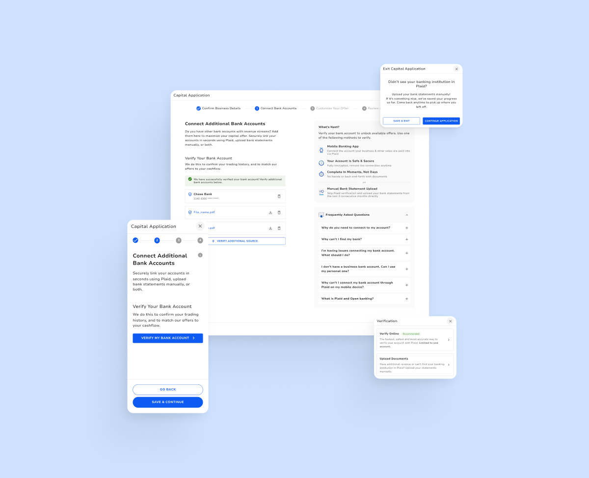
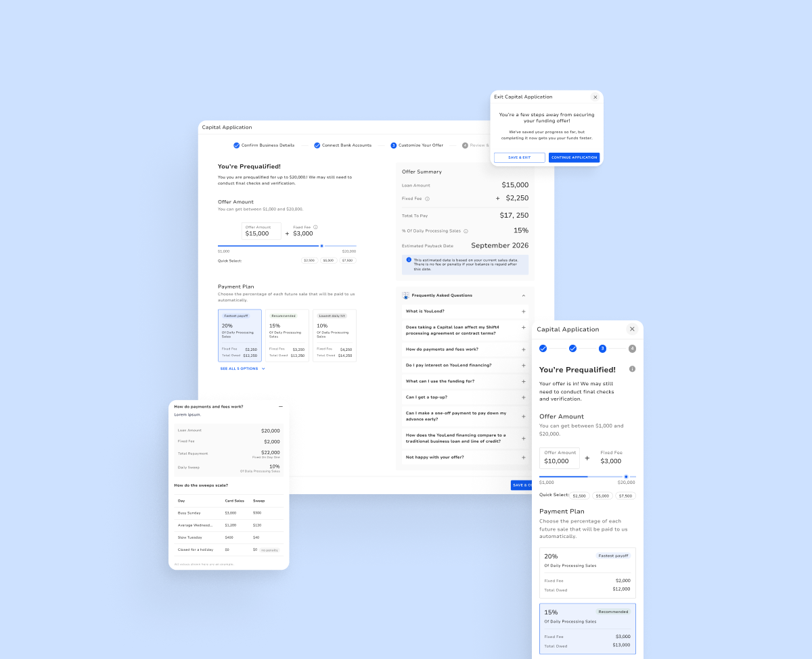
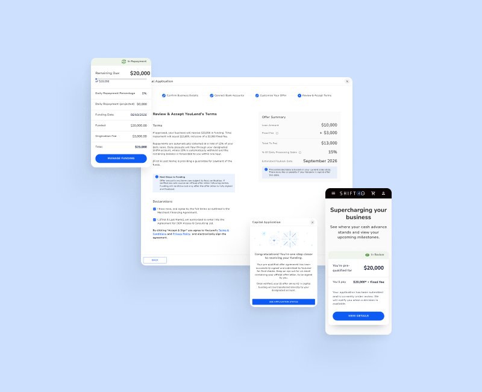

// Capital Embedded Application
Project Description
This project’s goal was to redesign Shift4’s Capital merchant financing experience, moving the application flow fully into Shift4’s back office software, transforming it from a handoff to a third-party lender’s site into a seamless, embedded part of the product merchants already use.

Problem
The application process for Shift4’s merchant financing product, Capital (in partnership with a third-party loan provider referred to as Loan Co.), lived entirely outside Shift4’s back office product. Merchants clicked “Apply Now” on the marketing landing page and were routed to Loan Co.’s own site to complete the application, creating a jarring handoff at the exact moment intent was highest. The drop-off data made the cost of that handoff clear: 33% of users abandoned at account creation with the third-party provider, the first thing they hit after leaving Shift4’s environment.
Another 33% dropped across the business information form and bank-connection steps that followed. Two-thirds of qualified, interested merchants never reached a funded offer, and the friction had nothing to do with the offer itself. It was the experience of leaving a trusted, familiar product to hand personal and business data to an unfamiliar site.
Beyond those two drop-off points, the available data didn’t break down precisely what within each step caused users to abandon. So part of the design task was a direct audit of Loan Co.’s own flow. That review surfaced concrete shortcomings the numbers alone didn’t explain. Every shortcoming became a specific target for the redesign, rather than working from drop-off percentages alone.
Loan Co. Flow Breakdown

Research
Before designing anything, I ran a competitive analysis of embedded financing across Toast, Square, Clover, SpotOn, and Lightspeed. I used a research skill our team built in-house. Each competitor solved one piece of the problem and stumbled on another:
- Toast Capital came closest, with automatic pre-qualification and a live offer customizer. But it gave no timeline between applying and approval.
- Square Loans buried a minimum-payment rule: if sales are slow, Square debits the shortfall straight from the merchant’s bank account.
- Clover Capital redirected merchants to a separate site mid-flow and hid pricing until after they applied.
- SpotOn Capital showed offers only to pre-qualified merchants. Everyone else saw nothing and had no way to ask.
- Lightspeed Capital put offers on a 30-day clock with no way to extend, leaving little time to consult a partner or accountant.
Key insight: Clover’s mid-flow redirect was the same failure Shift4’s funnel data showed was costing us two-thirds of qualified applicants. Fixing that, while avoiding everyone else’s gaps, was a genuine opportunity rather than just a benchmark.

ApproachPrototype first, pixel-perfect second
Rather than jumping straight into ideating within Figma, I used Claude Design to rapidly generate and iterate on interactive prototypes of the proposed flow. This let the team get directional feedback quickly before investing in polished visual design. Because iterations took minutes, we could explore and discard ideas efficiently, and we only committed design time to a flow that had already held up. Once it did, it was rebuilt as a pixel-perfect, dev-ready design in Figma.
The resulting flow is a single, fully embedded 4-step application within Shift4’s back office tool:
-
Confirm Business Details
Pre-fills what Shift4 already knows, so merchants don’t re-enter it. Since sensitive questions can cause hesitation, I added context explaining why each detail is needed and that the soft credit check won’t affect their score. Merchants also never have to create a separate account with the lender.
-
Connect Bank Accounts
Merchants verify through Plaid in seconds, or upload bank statements manually as a fallback. Linking a bank account asks for a lot of trust, so I added clarifying copy and an FAQ that answers questions merchants might have, placed right where those questions are likely to come up.
-
Customize Your Offer
Merchants see right away that they’re pre-qualified. They can adjust the amount and watch fees and repayment rates update live across payment plans. I made the math visual and easy to follow, clarified that the payoff date is only an estimate with no late-payoff penalty, and added an FAQ.
-
Review & Accept Terms
A plain-language summary of funding and repayment, followed by declarations and electronic signing in Customer Hub. A “Next Steps to Funding” callout explains that verification and an offer letter come before funds are released, and the Offer Summary stays in view throughout.





Outcome
By moving the entire journey into Customer Hub and pre-populating known merchant data, the design directly targets both drop-off points identified in research:
- Eliminates the account-creation drop-off by ensuring merchants never leave Shift4’s environment or create a separate Loan Co. login, addressing the 33% lost at that step
- Reduces the business-info and bank-connection friction, since business details are pre-filled from existing Shift4 data, and Plaid verification replaces manual document upload as the default path, targeting the second 33% drop-off
- Makes the offer tangible and interactive so that merchants can see and adjust their loan amount, fee, and repayment rate in real time, rather than receiving a static take-it-or-leave-it offer